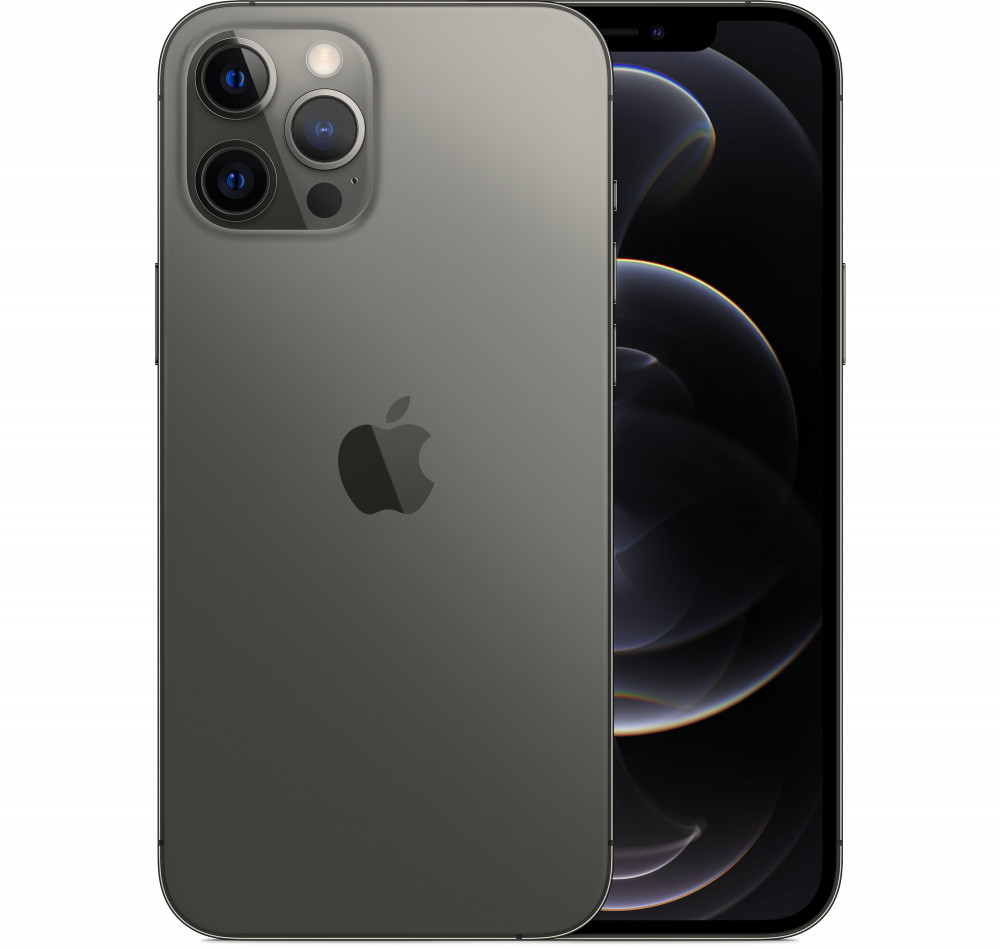

| Conheça nossos produtos |
| Iphone |
Ano |
Qualidade |
BEM VINDO AO MEHOR SITE DE IPHONE
Com excelente armazenamento interno, os iPhones parecem mágica. Eles têm um armazenamento interno muito superior e não travam com frequência, o que os mantém com um desempenho impecável. Além disso, Apples são otimizados para funcionar sem falhas com seus dispositivos limitados.
|
| 2019 |
câmera dupla de 12 MP, bateria duradoura, processador A13 Bionic e suporte ao iOS 17 |
| 
| 2020 |
câmera de 12 megapixels que permite ao Apple iPhone 12 tirar fotos com uma resolução de 4000x3000 pixels |

| 2021 |
A câmera ultra-wide não possui foco automático como os modelos Pro |